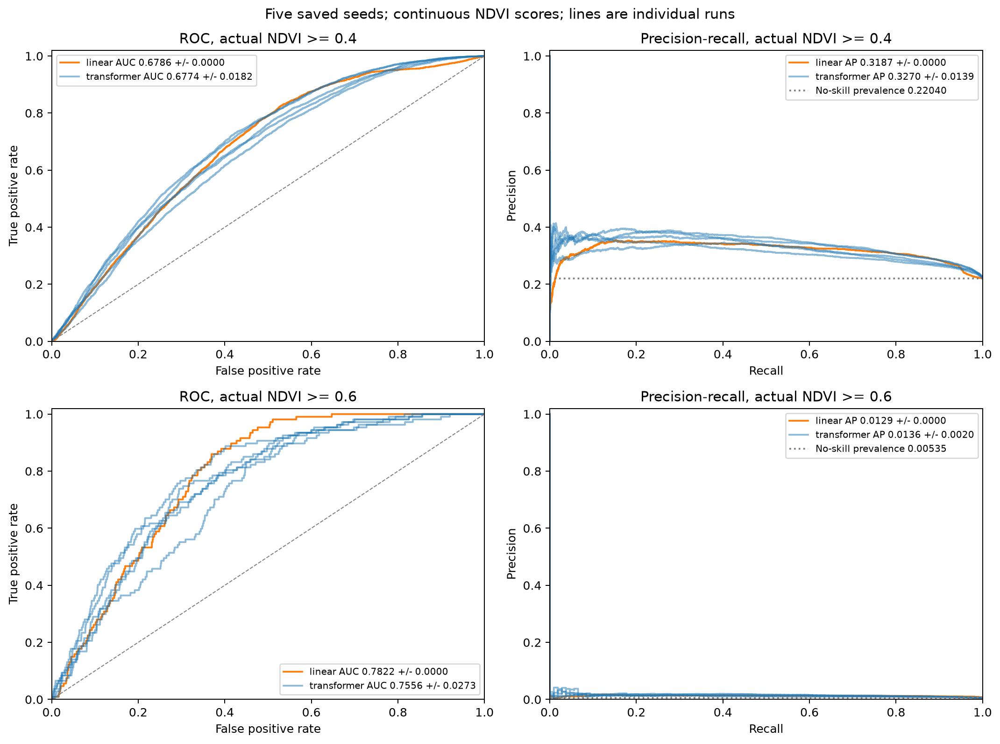
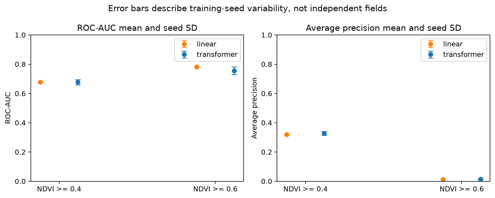
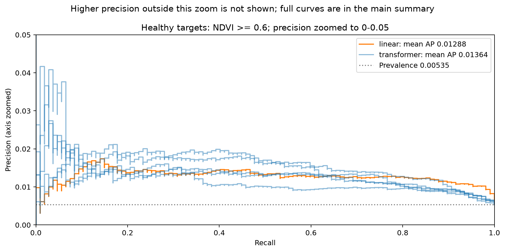
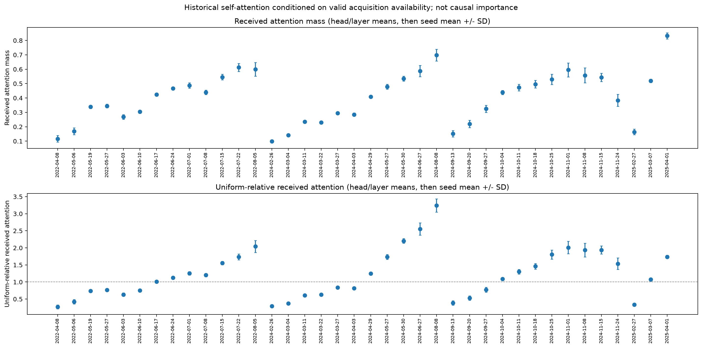
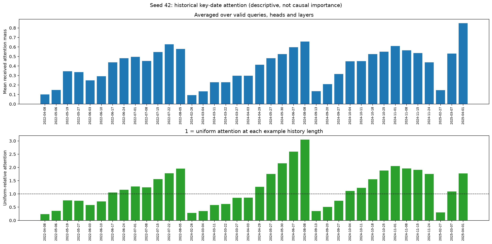
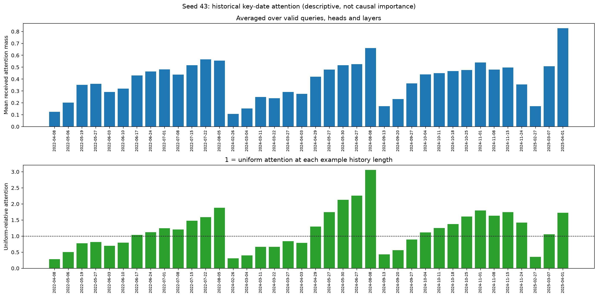
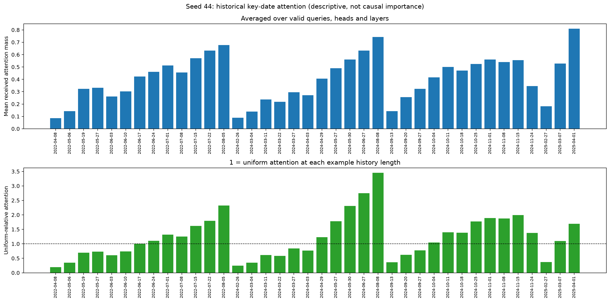
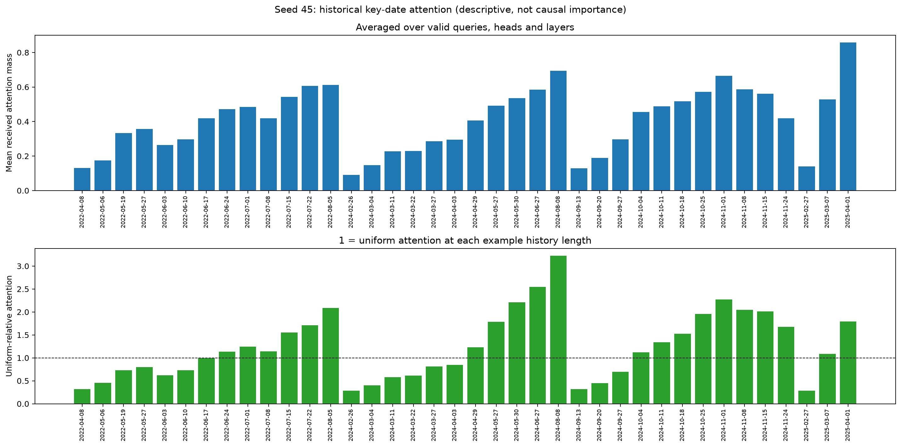
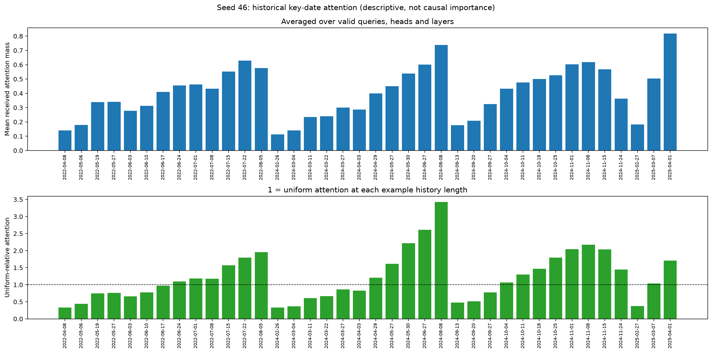

Existing predictions, checkpoints and saved test samples only. No retraining. Original experimental outputs and model/preprocessing source are preserved.
| cutoff | positive_definition | model | requested_seeds | available_seeds | roc_auc_mean | roc_auc_std | average_precision_mean | average_precision_std | n | positives | negatives | prevalence |
|---|---|---|---|---|---|---|---|---|---|---|---|---|
| 0.400000 | actual NDVI >= 0.4 | linear | 5 | 5 | 0.678647 | 0.000000 | 0.318651 | 0.000000 | 20000 | 4408 | 15592 | 0.220400 |
| 0.400000 | actual NDVI >= 0.4 | transformer | 5 | 5 | 0.677448 | 0.018193 | 0.326986 | 0.013888 | 20000 | 4408 | 15592 | 0.220400 |
| 0.600000 | actual NDVI >= 0.6 | linear | 5 | 5 | 0.782233 | 0.000000 | 0.012884 | 0.000000 | 20000 | 107 | 19893 | 0.005350 |
| 0.600000 | actual NDVI >= 0.6 | transformer | 5 | 5 | 0.755555 | 0.027321 | 0.013638 | 0.002039 | 20000 | 107 | 19893 | 0.005350 |
SD is sample SD across the available seeds on the same fixed test set. Linear regression is deterministic. These are not independent fields/datasets; no additional significance tests or independent-pixel confidence intervals were performed.
| seed | model | cutoff | positive_definition | status | n | positives | negatives | prevalence | roc_auc | average_precision |
|---|---|---|---|---|---|---|---|---|---|---|
| 42 | linear | 0.400000 | actual NDVI >= 0.4 | available | 20000 | 4408 | 15592 | 0.220400 | 0.678647 | 0.318651 |
| 42 | transformer | 0.400000 | actual NDVI >= 0.4 | available | 20000 | 4408 | 15592 | 0.220400 | 0.698296 | 0.342419 |
| 42 | linear | 0.600000 | actual NDVI >= 0.6 | available | 20000 | 107 | 19893 | 0.005350 | 0.782233 | 0.012884 |
| 42 | transformer | 0.600000 | actual NDVI >= 0.6 | available | 20000 | 107 | 19893 | 0.005350 | 0.790503 | 0.016024 |
| 43 | linear | 0.400000 | actual NDVI >= 0.4 | available | 20000 | 4408 | 15592 | 0.220400 | 0.678647 | 0.318651 |
| 43 | transformer | 0.400000 | actual NDVI >= 0.4 | available | 20000 | 4408 | 15592 | 0.220400 | 0.653068 | 0.312508 |
| 43 | linear | 0.600000 | actual NDVI >= 0.6 | available | 20000 | 107 | 19893 | 0.005350 | 0.782233 | 0.012884 |
| 43 | transformer | 0.600000 | actual NDVI >= 0.6 | available | 20000 | 107 | 19893 | 0.005350 | 0.715128 | 0.011326 |
| 44 | linear | 0.400000 | actual NDVI >= 0.4 | available | 20000 | 4408 | 15592 | 0.220400 | 0.678647 | 0.318651 |
| 44 | transformer | 0.400000 | actual NDVI >= 0.4 | available | 20000 | 4408 | 15592 | 0.220400 | 0.674188 | 0.331082 |
| 44 | linear | 0.600000 | actual NDVI >= 0.6 | available | 20000 | 107 | 19893 | 0.005350 | 0.782233 | 0.012884 |
| 44 | transformer | 0.600000 | actual NDVI >= 0.6 | available | 20000 | 107 | 19893 | 0.005350 | 0.766244 | 0.015341 |
| 45 | linear | 0.400000 | actual NDVI >= 0.4 | available | 20000 | 4408 | 15592 | 0.220400 | 0.678647 | 0.318651 |
| 45 | transformer | 0.400000 | actual NDVI >= 0.4 | available | 20000 | 4408 | 15592 | 0.220400 | 0.669417 | 0.312333 |
| 45 | linear | 0.600000 | actual NDVI >= 0.6 | available | 20000 | 107 | 19893 | 0.005350 | 0.782233 | 0.012884 |
| 45 | transformer | 0.600000 | actual NDVI >= 0.6 | available | 20000 | 107 | 19893 | 0.005350 | 0.754016 | 0.013497 |
| 46 | linear | 0.400000 | actual NDVI >= 0.4 | available | 20000 | 4408 | 15592 | 0.220400 | 0.678647 | 0.318651 |
| 46 | transformer | 0.400000 | actual NDVI >= 0.4 | available | 20000 | 4408 | 15592 | 0.220400 | 0.692271 | 0.336590 |
| 46 | linear | 0.600000 | actual NDVI >= 0.6 | available | 20000 | 107 | 19893 | 0.005350 | 0.782233 | 0.012884 |
| 46 | transformer | 0.600000 | actual NDVI >= 0.6 | available | 20000 | 107 | 19893 | 0.005350 | 0.751885 | 0.012004 |
Temporary non-returning hooks observe each historical self-attention module's actual Q/K/V and masks. Separate copies with identical weights recompute per-head softmax attention in evaluation mode. The original forward methods, parameters and need_weights=False calls remain unchanged. Hooks can change fused-kernel dispatch; ordinary, instrumented and saved predictions are checked with documented float32 tolerances.
Only valid historical query/key positions are aggregated. Received mass is averaged over valid query tokens. Uniform-relative attention divides by 1 / valid-history-length within each example before averaging, reducing the mechanical effect of different history lengths. Acquisition support counts are saved. Dates never used as valid history are unavailable, not zero-importance dates. Pairwise means are conditional on each pair co-occurring and need not sum to one across a global date row.
This is historical-to-historical self-attention, not target-to-history cross-attention. It is not a causal explanation or a complete measure of prediction importance: value projections, feedforward blocks, residuals, masked pooling, the future branch and persistence anchor also affect output. No intervention/ablation or new performance claim was made.
Illustrations are selected deterministically by dates: the first saved test example at the latest target date in each represented season/block. Full per-head arrays are in NPZ files; the illustrative plots average heads within each layer.
Descriptive conditional ranking, not proof of most influential flights.
| acquisition_id | date | season | mean_received_attention | received_attention_seed_std | mean_uniform_relative_attention | uniform_relative_seed_std | available_seeds | min_valid_key_samples | max_valid_key_samples |
|---|---|---|---|---|---|---|---|---|---|
| 25 | 2024-08-08 | provisional_2024_feb_aug | 0.698630 | 0.040857 | 3.241708 | 0.193611 | 5 | 572 | 572 |
| 24 | 2024-06-27 | provisional_2024_feb_aug | 0.588028 | 0.039488 | 2.551031 | 0.180156 | 5 | 908 | 908 |
| 23 | 2024-05-30 | provisional_2024_feb_aug | 0.534959 | 0.016531 | 2.203796 | 0.070455 | 5 | 2076 | 2076 |
| 12 | 2022-08-05 | provisional_2022_apr_aug | 0.600064 | 0.047792 | 2.040091 | 0.174781 | 5 | 281 | 281 |
| 34 | 2024-11-01 | provisional_2024_sep_dec | 0.595477 | 0.048501 | 2.009982 | 0.181859 | 5 | 364 | 364 |
| 36 | 2024-11-15 | provisional_2024_sep_dec | 0.543227 | 0.028591 | 1.937629 | 0.118868 | 5 | 26 | 26 |
| 35 | 2024-11-08 | provisional_2024_sep_dec | 0.557676 | 0.052644 | 1.937220 | 0.201334 | 5 | 92 | 92 |
| 33 | 2024-10-25 | provisional_2024_sep_dec | 0.529488 | 0.035816 | 1.803796 | 0.132401 | 5 | 608 | 608 |
| 41 | 2025-04-01 | provisional_2025_feb_apr | 0.832118 | 0.020661 | 1.738016 | 0.044200 | 5 | 52 | 52 |
| 22 | 2024-05-27 | provisional_2024_feb_aug | 0.478487 | 0.017372 | 1.735273 | 0.069495 | 5 | 4417 | 4417 |
| seed | ranking_status | attention_status | attention_samples | max_forward_abs_error | max_saved_prediction_abs_error |
|---|---|---|---|---|---|
| 42 | available | available | 20000 | 1.490116e-07 | 5.960464e-08 |
| 43 | available | available | 20000 | 1.192093e-07 | 5.960464e-08 |
| 44 | available | available | 20000 | 1.192093e-07 | 5.960464e-08 |
| 45 | available | available | 20000 | 1.490116e-07 | 5.960464e-08 |
| 46 | available | available | 20000 | 5.960464e-08 | 5.960464e-08 |
{
"unchanged": true,
"changed_files": [],
"protected_files": 771,
"hash_policy": "SHA256 for files <=2 MB and all checkpoints/joblib; size+mtime_ns for every protected file",
"no_training": true,
"existing_results_overwritten": false,
"existing_model_source_modified": false,
"hooks_removed_after_use": true
}





Illustration: example_3387_layer_means.png
Illustration: example_3387_layer_means.png
Illustration: example_3387_layer_means.png
Illustration: example_3387_layer_means.png
Illustration: example_3387_layer_means.png